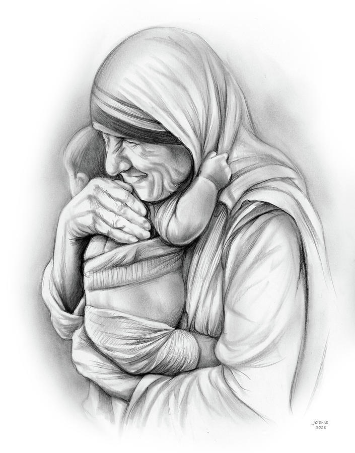

During her lifetime Mother Teresa became famous as the Catholic nun who dedicated her life to caring for the destitute and dying in the slums of Calcutta - now known as Kolkata. ... She spoke to Witness about that experience, her own faith, and how she felt about Mother Teresa's methods.

Why did mother teresa do for india
What did Mother Teresa do? Mother Teresa founded the Order of the Missionaries of Charity, a Roman Catholic congregation of women dedicated to the poor, particularly to those in India, that opened numerous centres serving the blind, the aged, and the disabled.
A short biography of Mother teresa
Mother teresa was born on 26 August 1910 - 5 September 1997
In 1950, Teresa founded the Missionaries of Charity, a Roman Catholic religious congregation that had over 4,500 nuns and was active in 133 countries as of 2012.
The congregation manages homes for people who are dying of HIV/AIDS, leprosy and tuberculosis.
It also runs soup kitchens, dispensaries, mobile clinics, children's and family counselling programmes, as well as orphanages and schools. Members take vows of chastity,
poverty, and obedience, and also profess a fourth vow – to give "wholehearted free service to the poorest of the poor.
In 1974, Teresa received the Nobel Peace Prize "for work undertaken in the struggle to overcome poverty and distress, which also constitutes a threat to peace".
On 10 September 1946, Teresa experienced what she later described as "the call within the call" when she travelled by train to the Loreto convent in Darjeeling from Calcutta
for her annual retreat.
On 4 September 2017, during a celebration honouring the 1st anniversary of her canonization, Sister Mary Prema Pierick, Superior-General of the Missionaries of Charity, announced that.
Teresa singled out abortion as "the greatest destroyer of peace today. Because if a mother can kill her own child – what is left for me to kill you and you kill me – there is nothing between."
Analysing her deeds and achievements, Pope John Paul II said: "Where did Mother Teresa find the strength and perseverance to place herself completely at the service of others?
She found it in prayer and in the silent contemplation of Jesus Christ, his Holy Face, his Sacred Heart.
Teresa has been commemorated by museums and named the patroness of a number of churches. She has had buildings, roads and complexes named after her, including Albania's international airport. Mother Teresa Day